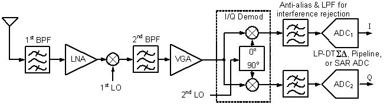
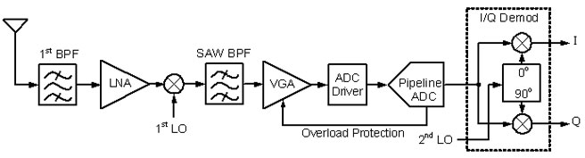
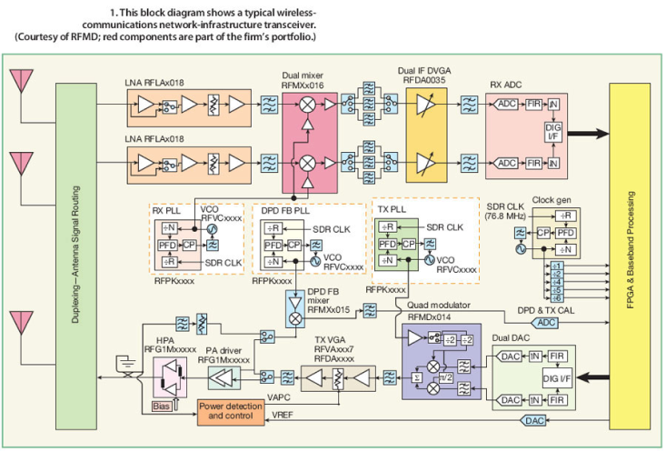
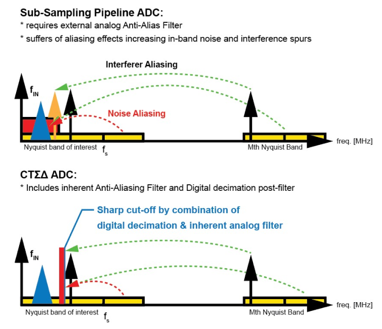
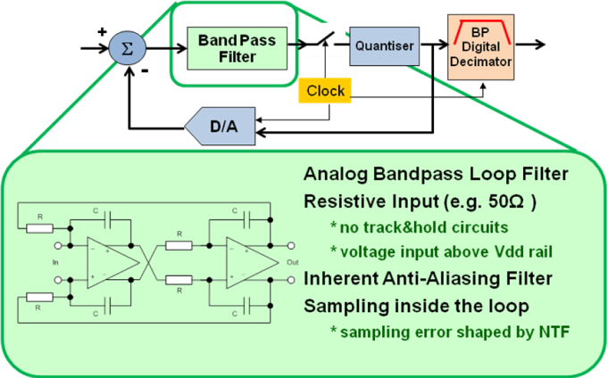

The current Receiver architecture in the Wireless Base station is predominantly an adapted heterodyne architecture. The second mixer stage (intermediate frequency to baseband) of this architecture is replaced by a pipelined analog-to-digital converter (ADC) which is operated in sub-sampling meaning the sampling rate of this converter is reasonably smaller than the input frequency of the ADC. The Nyquist criteria are met since the band of interest is located around the IF (intermediate frequency is equal input frequency of pipeline ADC) and is much smaller than the IF. This way one can select one of the higher-order Nyquist bands (e.g. the 10th or 16th) for digitalization by using an ADC with just exactly 1x Nyquist bandwidth.
Superheterodyne IQ receivers with pipeline, or SAR (successive approximation) low-pass ADCs mostly applied in consumer smartphones, (LNA = low noise amplifier, VGA = variable gain amplifier, LO = local oscillator, BPF = passive bandpass filter).
Heterodyne IF receiver utilizing wide-band Pipeline ADC applied in base stations (2nd mixer already in the digital domain).
Block diagram of LTE (4G) Base station revealing the heterodyne downconverter architecture with a pipeline ADC in sub-sampling mode.Courtesy of RF-Microdevices / QORVO, Janine Love (Aug. 2011)
The sub-sampling process is moving all signals at the input into the Nyquist band of the output sampling rate. Therefore high order analog filtering is necessary prior to the sub-sampling ADC converter – anti-aliasing filtering. These analog RF filters – mechanical SAW filters – have in-band attenuation and have therefore to be combined with amplifier stages (VGA) to compensate for the in-band attenuation (loss). Additionally to that, the input stage of the sub-sampling converter itself has to have a noise level which takes into account that due to the sub-sampling the noise level of the input stage is increased by the sub-sampling process.
The sampling input network of the pipeline / SAR ADC is difficult to drive for the preceding amplifier stage since the sampling capacitors of the pipeline input stage have to be charged within the sampling period according to the resolution of the ADC (e.g. 16bit 5GS/s ADC with 5pF => sampling settling to 16bit accuracy within 0,2ns corresponds 11,8*τ= 11,8*R*C results in 3,4 Ω max. switch resistance over whole voltage swing for all corners).
The sampling process at the input of the pipeline ADC is a technological barrier to the implementation of pipeline ADCs with high signal bandwidth (more than 200MHz) and high resolution (14 ENOB) even in modern nanometer CMOS technologies. The higher bandwidth increases the sampling frequency of the pipelined converter and reduces the settling period for the sampling process. Additionally, the demand for higher ADC resolution increases the settling accuracy which is effective in a further reduction of the settling period. The progress in CMOS process technology speed and the development of process technology with small feature sizes (FinFET) can not overcome this technical limit. The reason is that the analog-to-digital conversion of the continuous-time (CT) analog signal into a discrete-time (DT) signal happens at the input of the pipeline ADC. Therefore the necessary resolution of this process has to be the same as the target resolution of the ADC. Due to the nature of the sampling process, the time constants needed are much higher than the input signal frequencies. Although the CMOS process technology decreased the minimum feature size from 130nm to 3nm in the last 20 years or from 32nm to 3nm in the last 10 years, the resolution and bandwidth of pipeline / SAR ADC did not improve in the same way as needed for example in wireless and radar / Lidar receivers.
The market for base station receiver demand since 2005 analog to digital converters with higher bandwidth and resolution as the pipeline ADC can offer. This demand can not be satisfied by the current receiver architecture and the current available ADC converters. Due to the further increasing demand for high bandwidth and resolution in base station (BTS) receivers, a change of receiver architecture and ADC architecture is mandatory and will lead to a big step in the evolution of receiver architectures.
All the limitations which hinder increasing bandwidth and resolution of the receiver are related to the sampling and down-conversion process of the pipelined converter. This process offers flexibility in down conversion but is very inefficient regarding speed and resolution. To make things worse it can not really benefit from modern process technologies with small feature sizes. Therefore the next evolution of receiver architecture is to digitize the signal first and do the down-mixing process in the digital domain, where it can be done with theoretically unlimited resolution and accuracy. To avoid sampling at the input the signal is digitized with a continuous time bandpass sigma-delta (CTSD) converter which performs the sampling and digitizing after a series of analog gain stages, therefore the sampling error is shaped in the frequency domain and filtered out by the digital post-processing (digital decimation filter: E.Hogenauer 1981, R.Crochiere, L. Rabiner 1975, R.Crochiere, L. Rabiner 1981, B.Brandt, B. Wooley 1994.)
IF receiver utilizing a bandpass CTSD ADC
The bandpass ADC digitizes only the band of interest in this case the intermediate frequency. All the other signals are filtered out by the analog modulator and the digital post filter. Since the continuous time sigma delta loop anti-alias filtering is part of the ADC all the SAW filter and gain stages in front of the pipeline ADC of current receiver architectures can be omitted. The input stage of the CTSD ADC is equivalent to a time-invariant resistive load (50Ω) and no special driver stage is necessary. The whole IF receiver stage consisting of a series of anti-aliasing filters and gain stages plus pipeline ADC can be replaced by the continuous time bandpass sigma-delta ADC and its digital decimation filter.
The building blocks of this ADC like an analog filter, digital-to-analog converter, internal quantizer, and digital decimation filter benefit to the full extent from new process technologies. Therefore the current and future demand for higher signal bandwidth and higher resolution can be satisfied only with this new wireless receiver architecture.
The concept of Continium Technologies is to design continuous-time bandpass sigma-delta ADCs to enable the customer to build and sell a new wireless base station receiver. The business development and marketing experience as well as customer contacts of the founders show that the 5G customer would since 2020 need a continuous time bandpass ADC with a bandwidth between 400-500MHz, a resolution of 16bit, and an effective number of bits of 13-14 (ENOB).
Members of the Continium IC design team already completed the design of the very first 20MHz bandpass CTSD ADC for wireless communication base stations and achieved a noise density of -159dBC/Hz and SFDR of 95dBc (programmable IF = 107/173Mhz). The device called ADC16DK161 was stopped during the second prototype tape-out upon acquisition by a giant semiconductor company, circumventing the competition to their obsolete pipeline ADCs.
The new receiver architecture opens the door to a variety of future ADC products for instance the integration of the mixer stage and the development of an ADC for direct radio frequency digitizing. With decreasing feature size of the process technology, the new wireless receiver architecture will also be used in cell phone receiver or mmWave point-to-point links for wireless backhaul of BTS which offers the possibility to address this market as well as a second step.
Our experience with BTS receiver design traced back to the Xignal startup is that the new receiver architecture is a technology step that is unavoidable and driven by the wireless infrastructure market since 2005. To own the suitable continuous-time bandpass ADC intellectual property (IP) core and know-how together with an experienced team is a very valuable property, independent of the company selling the IP or is part of the supplier chain.
The continuous-time Bandpass Sigma Delta (CTSD) ADC development is extremely complex thus, a typical ADC development team, without any special know-how, would have to spend many years on the learning curve. Because of our experience in research and the product development of CTSD ADCs and our prototype development, we are about 3 years ahead compared to most design teams in the world. Normal ADC design teams who are designing state-of-the-art receiver architectures and Nyquist rate ADCs can be therefore excluded as competitors. The development of this product is in general a very big challenge for a IC development team. It requires best-in-class experts in several very different fields of analog, digital, and mixed-signal IC design. Teams which offer the necessary mixture of experts are at the moment not available and very difficult to establish. In addition, such development involves a very high, and in numbers very difficult to predict, financial risk to companies that have never worked in this field before. These are the reasons why up to now no modern wireless receiver CTSD ADC product for BTS units is available on the market although the customers have been demanding it for at least 10 years.
For more information check our silicon IP cores:
Wireless 5G base station transceiver (500 MHz CTSD ADC, 1 GHz DAC) →